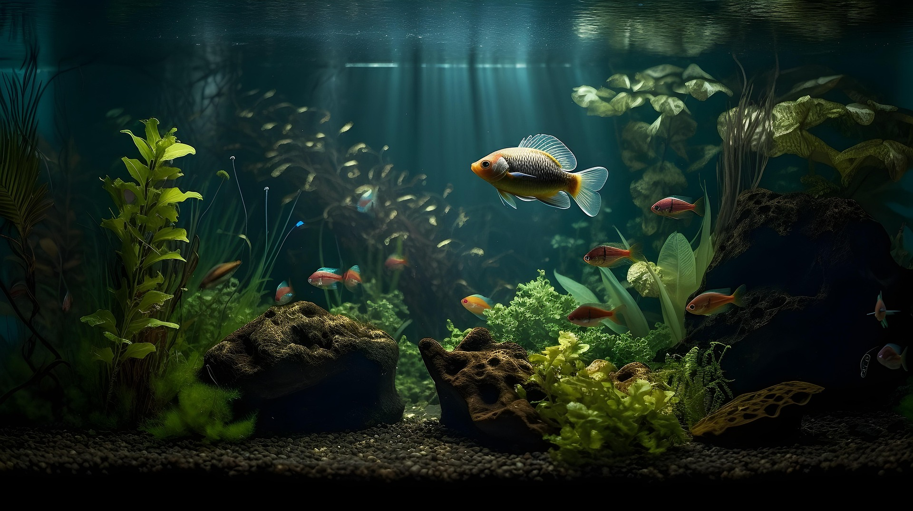
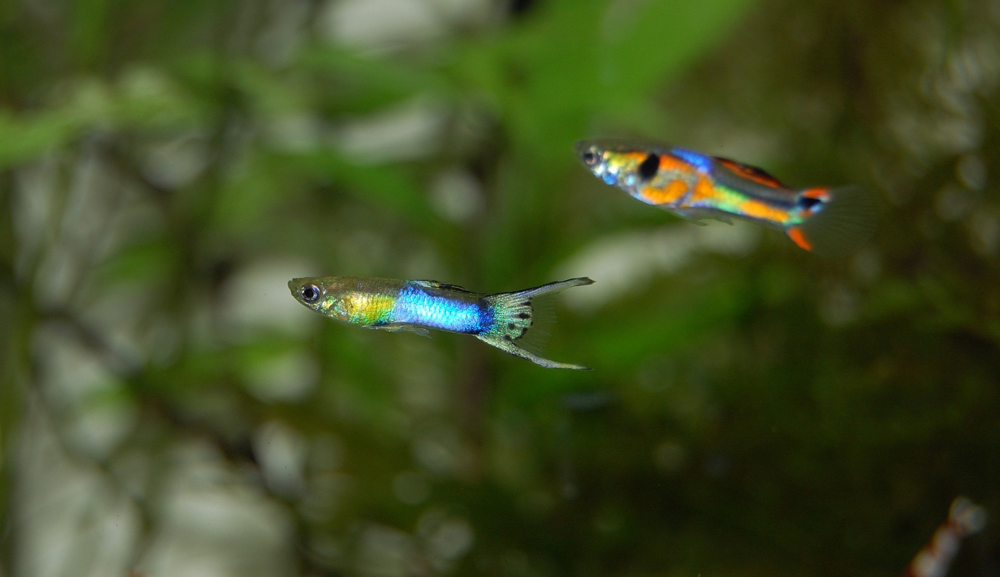
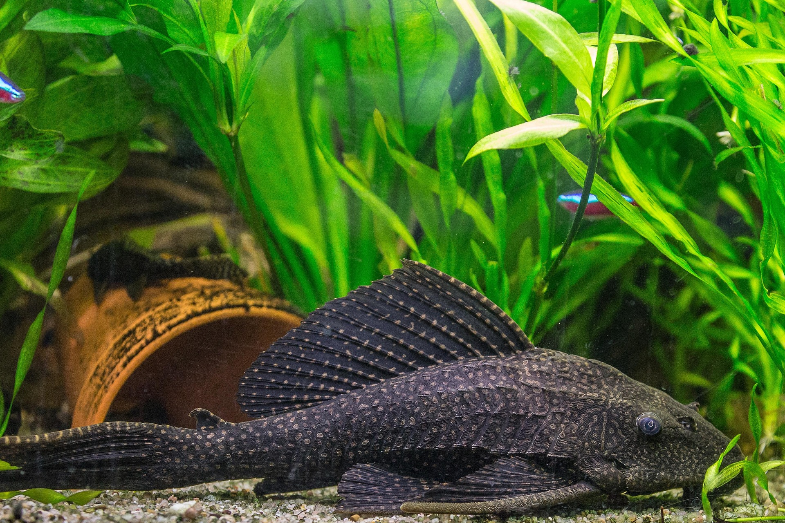
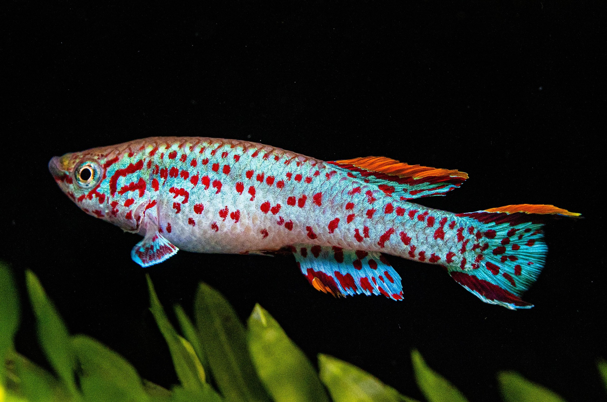

It's all about Aquarium fish!
Get your own Aquarium tank right now and we will provide you the necessary starting equipment for free!

Recommended Aquarium fish:

Cichlids are a diverse family of freshwater fish, known for their vibrant colors, varied body shapes, and complex social behaviors.

Guppies are small, freshwater fish, typically 1 to 2 inches long, known for their vibrant colors and patterns, especially in males.

Catfish are a diverse group of ray-finned fish known for their prominent barbels, whisker-like appendages near their mouths, which they use to detect food.

Killifish are small, elongated fishes belonging to the family Cyprinodontidae, known for their diverse range of colors and patterns.
I am so happy that I decided to go with AquaDefinitiv! They helped me on how to get started and answered all my questions!
Sign up now and get started!
We will provide additional free food supplies for 3 months and basic cleaning tools if you sign up now!